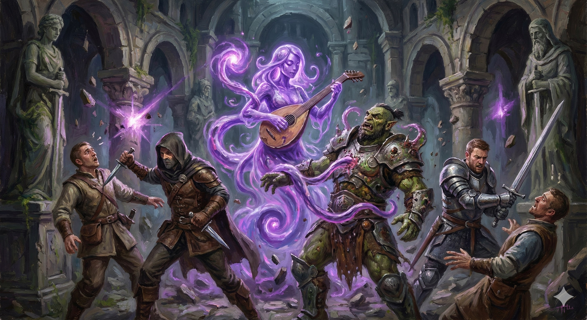

College of the Unseen Lure
Bards of the College of the Unseen Lure don't just entertain; they weave sonic illusions and hypnotic suggestions to guide their victims exactly where they want them to be—usually right into the jaws of an ambush.

Living Instrument
- Mimicked Performance. Healing spells grant extra Temp HP equal to Bard level. Nearby enemy takes Psychic damage equal to Temp HP gained.
- Lurker's Echo. Mimic any sound. Cast Minor Illusion (audible only) at will.
Deceptive Resonance
When a creature uses your Bardic Inspiration, trigger one effect on an enemy within 60 feet:
- Sticky Footing. Save or Speed -10ft.
- Misplaced Focus. Save or Disadvantage on next attack.
- Illusory Prize. Disadvantage on Perception/Insight.
Resonant Trap
- Remote Anchor. Bonus action: Instrument floats and anchors to surface. Cast spells from its location.
- Adhesive Strike. Reaction when hit: Instrument makes contested Grapple check.
- Caustic Grip (Lvl 10). Grappled creature takes Acid damage equal to Cha mod at start of your turn.
Perfect Ambush Harmony
- Concealed Performance. Action: You and 5 allies become Hidden from enemies affected by your traps/resonance.
- Consume the Distracted. Expend Bardic Inspiration when you hit a trapped enemy to make them Vulnerable to that attack's damage.